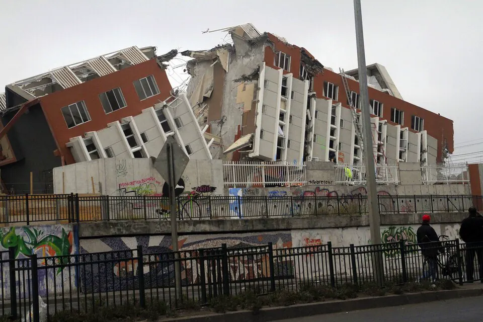

Terremoto y tsunami del 27F

El 27 de febrero de 2010, a las 3:34 de la madrugada, un terremoto de magnitud 8,8, con epicentro frente a la costa de la Región del Maule, afectó a gran parte del centro y sur del país. Minutos después, un tsunami golpeó el litoral, incluido el Archipiélago Juan Fernández, y causó muchas de las víctimas en localidades como Constitución, Dichato, Talcahuano y Pelluhue. Cientos de personas murieron y cientos de miles de viviendas resultaron dañadas. La emergencia dejó en evidencia fallas en el sistema de alerta de tsunami, que no advirtió a tiempo a la población, lo que motivó investigaciones y cambios en los organismos de emergencia. En Concepción y otras ciudades hubo saqueos, y se decretaron estado de excepción y toque de queda. El sismo ocurrió en los últimos días del primer gobierno de Michelle Bachelet, y la reconstrucción quedó a cargo del gobierno de Sebastián Piñera, que asumió el 11 de marzo. Las normas de construcción antisísmica permitieron que la mayoría de los edificios modernos resistieran, aunque hubo derrumbes emblemáticos, como el del edificio Alto Río en Concepción. El 27F dejó aprendizajes sobre preparación, evacuación y cultura de prevención.
Versión para niños
En la madrugada del 27 de febrero de 2010, un enorme terremoto sacudió el centro y el sur de Chile. Poco después, olas gigantes llegaron a varias ciudades y pueblos de la costa. Lugares como Concepción, Talcahuano, Constitución y Dichato sufrieron grandes daños, y muchas familias perdieron sus casas. Todo el país se unió para ayudar a las personas afectadas y reconstruir lo que se había perdido.
Para maestros
Nivel sugerido: 2° medio
Objetivo: Analizar el terremoto y tsunami de 2010 como un desastre socionatural, identificando factores de riesgo, respuesta institucional y aprendizajes.
Preguntas para la clase:
- ¿Por qué se habla de desastres "socionaturales" y no solo "naturales"?
- ¿Qué falló y qué funcionó en la respuesta al 27F?
- ¿Qué medidas de prevención existen hoy en tu comuna o en tu colegio?
Actividad (20–30 min): En grupos, los estudiantes revisan el plan de seguridad escolar del establecimiento y elaboran un mapa de las rutas de evacuación. Si alguien del curso o su familia vivió el 27F, puede compartir su experiencia solo si lo desea.
Fuentes sugeridas: Servicio Nacional de Prevención y Respuesta ante Desastres (SENAPRED); Centro Sismológico Nacional de la Universidad de Chile; Biblioteca del Congreso Nacional (BCN).
Objetivos de Aprendizaje (Currículum Nacional)
- 5° básico · HI05 OA 12 … riesgos naturales que afectan a su localidad, como sismos, maremotos, inundaciones, derrumbes y volcanismo, e identificar formas en que la comunidad puede protegerse
- 6° básico · HI06 OA 14 Explicar cómo han influido los desastres naturales en el desarrollo de Chile durante su historia reciente, dando ejemplos de nivel nacional y regional
- 3° o 4° medio (Mundo global) · FG-MGLO-3y4-OAC-04 Analizar, por medio de la investigación, desastres socio-naturales, considerando amenazas naturales, el papel de la sociedad y el Estado en la prevención
Revisión humana pendiente. Cómo se revisa · Reportar un error
Cómo citar: Historia de Chile. (2026). Terremoto y tsunami del 27F. En Historia de Chile: atlas y línea de tiempo. https://moises-salgado.github.io/historia-de-chile/momento/terremoto-y-tsunami-del-27f.html